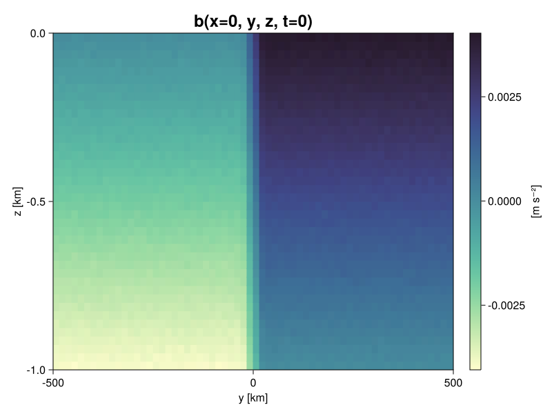

Baroclinic adjustment
In this example, we simulate the evolution and equilibration of a baroclinically unstable front.
Install dependencies
First let's make sure we have all required packages installed.
using Pkg
pkg"add Oceananigans, CairoMakie"using Oceananigans
using Oceananigans.UnitsGrid
We use a three-dimensional channel that is periodic in the x direction:
Lx = 1000kilometers # east-west extent [m]
Ly = 1000kilometers # north-south extent [m]
Lz = 1kilometers # depth [m]
Nx = 64
Ny = 64
Nz = 40
grid = RectilinearGrid(size = (Nx, Ny, Nz),
x = (0, Lx),
y = (-Ly/2, Ly/2),
z = (-Lz, 0),
topology = (Periodic, Bounded, Bounded))64×64×40 RectilinearGrid{Float64, Periodic, Bounded, Bounded} on CPU with 3×3×3 halo
├── Periodic x ∈ [0.0, 1.0e6) regularly spaced with Δx=15625.0
├── Bounded y ∈ [-500000.0, 500000.0] regularly spaced with Δy=15625.0
└── Bounded z ∈ [-1000.0, 0.0] regularly spaced with Δz=25.0Model
We built a HydrostaticFreeSurfaceModel with an ImplicitFreeSurface solver. Regarding Coriolis, we use a beta-plane centered at 45° South.
model = HydrostaticFreeSurfaceModel(; grid,
coriolis = BetaPlane(latitude = -45),
buoyancy = BuoyancyTracer(),
tracers = :b,
momentum_advection = WENO(),
tracer_advection = WENO())HydrostaticFreeSurfaceModel{CPU, RectilinearGrid}(time = 0 seconds, iteration = 0)
├── grid: 64×64×40 RectilinearGrid{Float64, Periodic, Bounded, Bounded} on CPU with 3×3×3 halo
├── timestepper: QuasiAdamsBashforth2TimeStepper
├── tracers: b
├── closure: Nothing
├── buoyancy: BuoyancyTracer with -ĝ = ZDirection
├── free surface: ImplicitFreeSurface with gravitational acceleration 9.80665 m s⁻²
│ └── solver: FFTImplicitFreeSurfaceSolver
└── coriolis: BetaPlane{Float64}We want to initialize our model with a baroclinically unstable front plus some small-amplitude noise.
"""
ramp(y, Δy)
Linear ramp from 0 to 1 between -Δy/2 and +Δy/2.
For example:
```
y < -Δy/2 => ramp = 0
-Δy/2 < y < -Δy/2 => ramp = y / Δy
y > Δy/2 => ramp = 1
```
"""
ramp(y, Δy) = min(max(0, y/Δy + 1/2), 1)We then use ramp(y, Δy) to construct an initial buoyancy configuration of a baroclinically unstable front. The front has a buoyancy jump Δb over a latitudinal width Δy.
N² = 4e-6 # [s⁻²] buoyancy frequency / stratification
M² = 8e-8 # [s⁻²] horizontal buoyancy gradient
Δy = 50kilometers # width of the region of the front
Δb = Δy * M² # buoyancy jump associated with the front
ϵb = 1e-2 * Δb # noise amplitude
bᵢ(x, y, z) = N² * z + Δb * ramp(y, Δy) + ϵb * randn()
set!(model, b=bᵢ)Let's visualize the initial buoyancy distribution.
using CairoMakie
x, y, z = 1e-3 .* nodes((Center, Center, Center), grid) # convert m -> km
b = model.tracers.b
fig, ax, hm = heatmap(y, z, interior(b)[1, :, :],
colormap=:deep,
axis = (xlabel = "y [km]",
ylabel = "z [km]",
title = "b(x=0, y, z, t=0)",
titlesize = 24))
Colorbar(fig[1, 2], hm, label = "[m s⁻²]")
Now let's built a Simulation.
Δt₀ = 5minutes
stop_time = 40days
simulation = Simulation(model, Δt=Δt₀, stop_time=stop_time)Simulation of HydrostaticFreeSurfaceModel{CPU, RectilinearGrid}(time = 0 seconds, iteration = 0)
├── Next time step: 5 minutes
├── Elapsed wall time: 0 seconds
├── Wall time per iteration: NaN years
├── Stop time: 40 days
├── Stop iteration : Inf
├── Wall time limit: Inf
├── Callbacks: OrderedDict with 4 entries:
│ ├── stop_time_exceeded => Callback of stop_time_exceeded on IterationInterval(1)
│ ├── stop_iteration_exceeded => Callback of stop_iteration_exceeded on IterationInterval(1)
│ ├── wall_time_limit_exceeded => Callback of wall_time_limit_exceeded on IterationInterval(1)
│ └── nan_checker => Callback of NaNChecker for u on IterationInterval(100)
├── Output writers: OrderedDict with no entries
└── Diagnostics: OrderedDict with no entriesWe add a TimeStepWizard callback to adapt the simulation's time-step,
wizard = TimeStepWizard(cfl=0.2, max_change=1.1, max_Δt=20minutes)
simulation.callbacks[:wizard] = Callback(wizard, IterationInterval(20))Callback of TimeStepWizard(cfl=0.2, max_Δt=1200.0, min_Δt=0.0) on IterationInterval(20)Also, we add a callback to print a message about how the simulation is going,
using Printf
wall_clock = [time_ns()]
function print_progress(sim)
@printf("[%05.2f%%] i: %d, t: %s, wall time: %s, max(u): (%6.3e, %6.3e, %6.3e) m/s, next Δt: %s\n",
100 * (sim.model.clock.time / sim.stop_time),
sim.model.clock.iteration,
prettytime(sim.model.clock.time),
prettytime(1e-9 * (time_ns() - wall_clock[1])),
maximum(abs, sim.model.velocities.u),
maximum(abs, sim.model.velocities.v),
maximum(abs, sim.model.velocities.w),
prettytime(sim.Δt))
wall_clock[1] = time_ns()
return nothing
end
simulation.callbacks[:print_progress] = Callback(print_progress, IterationInterval(100))Callback of print_progress on IterationInterval(100)Diagnostics/Output
Add some diagnostics. Here, we save the buoyancy, $b$, at the edges of our domain as well as the zonal ($x$) average of buoyancy.
u, v, w = model.velocities
B = Field(Average(b, dims=1))
filename = "baroclinic_adjustment"
save_fields_interval = 0.5day
slicers = (west = (1, :, :),
east = (grid.Nx, :, :),
south = (:, 1, :),
north = (:, grid.Ny, :),
bottom = (:, :, 1),
top = (:, :, grid.Nz))
for side in keys(slicers)
indices = slicers[side]
simulation.output_writers[side] = JLD2OutputWriter(model, (; b);
filename = filename * "_$(side)_slice",
schedule = TimeInterval(save_fields_interval),
overwrite_existing = true,
indices)
end
simulation.output_writers[:zonal] = JLD2OutputWriter(model, (b=B,);
filename = filename * "_zonal_average",
schedule = TimeInterval(save_fields_interval),
overwrite_existing = true)JLD2OutputWriter scheduled on TimeInterval(12 hours):
├── filepath: ./baroclinic_adjustment_zonal_average.jld2
├── 1 outputs: b
├── array type: Array{Float32}
├── including: [:grid, :coriolis, :buoyancy, :closure]
└── max filesize: Inf YiBNow let's run!
@info "Running the simulation..."
run!(simulation)
@info "Simulation completed in " * prettytime(simulation.run_wall_time)[ Info: Running the simulation...
[ Info: Initializing simulation...
[00.00%] i: 0, t: 0 seconds, wall time: 10.400 seconds, max(u): (0.000e+00, 0.000e+00, 0.000e+00) m/s, next Δt: 5.500 minutes
[ Info: ... simulation initialization complete (10.557 seconds)
[ Info: Executing initial time step...
[ Info: ... initial time step complete (1.283 minutes).
[01.17%] i: 100, t: 11.193 hours, wall time: 3.819 minutes, max(u): (6.983e-01, 3.330e-01, 3.393e-03) m/s, next Δt: 8.858 minutes
[03.03%] i: 200, t: 1.213 days, wall time: 2.425 minutes, max(u): (6.086e-01, 3.504e-01, 2.469e-03) m/s, next Δt: 14.266 minutes
[05.99%] i: 300, t: 2.396 days, wall time: 2.652 minutes, max(u): (5.621e-01, 2.941e-01, 2.032e-03) m/s, next Δt: 20 minutes
[09.44%] i: 400, t: 3.778 days, wall time: 2.387 minutes, max(u): (4.679e-01, 2.713e-01, 1.772e-03) m/s, next Δt: 20 minutes
[12.92%] i: 500, t: 5.167 days, wall time: 2.371 minutes, max(u): (4.472e-01, 2.481e-01, 1.539e-03) m/s, next Δt: 20 minutes
[16.39%] i: 600, t: 6.556 days, wall time: 2.378 minutes, max(u): (4.508e-01, 2.671e-01, 1.609e-03) m/s, next Δt: 20 minutes
[19.86%] i: 700, t: 7.944 days, wall time: 2.370 minutes, max(u): (4.797e-01, 3.277e-01, 2.068e-03) m/s, next Δt: 20 minutes
[23.33%] i: 800, t: 9.333 days, wall time: 2.435 minutes, max(u): (5.365e-01, 5.020e-01, 2.917e-03) m/s, next Δt: 20 minutes
[26.40%] i: 900, t: 10.561 days, wall time: 2.443 minutes, max(u): (6.333e-01, 6.401e-01, 4.334e-03) m/s, next Δt: 16.017 minutes
[29.24%] i: 1000, t: 11.697 days, wall time: 2.459 minutes, max(u): (7.110e-01, 7.106e-01, 5.224e-03) m/s, next Δt: 15.953 minutes
[32.14%] i: 1100, t: 12.857 days, wall time: 2.459 minutes, max(u): (7.213e-01, 8.136e-01, 4.681e-03) m/s, next Δt: 17.804 minutes
[35.20%] i: 1200, t: 14.079 days, wall time: 2.415 minutes, max(u): (8.046e-01, 8.746e-01, 4.627e-03) m/s, next Δt: 18.009 minutes
[38.26%] i: 1300, t: 15.303 days, wall time: 2.366 minutes, max(u): (9.241e-01, 8.556e-01, 4.570e-03) m/s, next Δt: 18.234 minutes
[41.39%] i: 1400, t: 16.556 days, wall time: 2.339 minutes, max(u): (9.728e-01, 8.110e-01, 4.363e-03) m/s, next Δt: 19.102 minutes
[44.79%] i: 1500, t: 17.917 days, wall time: 2.297 minutes, max(u): (9.016e-01, 9.302e-01, 4.069e-03) m/s, next Δt: 20 minutes
[48.16%] i: 1600, t: 19.264 days, wall time: 2.284 minutes, max(u): (8.457e-01, 1.018e+00, 3.808e-03) m/s, next Δt: 20 minutes
[51.63%] i: 1700, t: 20.653 days, wall time: 2.261 minutes, max(u): (8.459e-01, 9.329e-01, 3.303e-03) m/s, next Δt: 20 minutes
[55.10%] i: 1800, t: 22.042 days, wall time: 2.243 minutes, max(u): (9.311e-01, 8.510e-01, 3.240e-03) m/s, next Δt: 20 minutes
[58.58%] i: 1900, t: 23.431 days, wall time: 2.230 minutes, max(u): (8.689e-01, 8.442e-01, 2.412e-03) m/s, next Δt: 20 minutes
[62.05%] i: 2000, t: 24.819 days, wall time: 2.242 minutes, max(u): (9.082e-01, 1.038e+00, 3.021e-03) m/s, next Δt: 20 minutes
[65.52%] i: 2100, t: 26.208 days, wall time: 2.201 minutes, max(u): (9.211e-01, 9.859e-01, 2.436e-03) m/s, next Δt: 20 minutes
[68.99%] i: 2200, t: 27.597 days, wall time: 2.183 minutes, max(u): (9.299e-01, 1.040e+00, 2.613e-03) m/s, next Δt: 20 minutes
[72.47%] i: 2300, t: 28.986 days, wall time: 2.185 minutes, max(u): (9.476e-01, 9.622e-01, 3.482e-03) m/s, next Δt: 20 minutes
[75.94%] i: 2400, t: 30.375 days, wall time: 2.234 minutes, max(u): (1.072e+00, 8.314e-01, 2.109e-03) m/s, next Δt: 20 minutes
[79.41%] i: 2500, t: 31.764 days, wall time: 2.185 minutes, max(u): (9.538e-01, 8.309e-01, 1.912e-03) m/s, next Δt: 20 minutes
[82.88%] i: 2600, t: 33.153 days, wall time: 2.163 minutes, max(u): (9.125e-01, 8.535e-01, 2.362e-03) m/s, next Δt: 20 minutes
[86.35%] i: 2700, t: 34.542 days, wall time: 2.164 minutes, max(u): (8.835e-01, 7.723e-01, 2.098e-03) m/s, next Δt: 20 minutes
[89.83%] i: 2800, t: 35.931 days, wall time: 2.161 minutes, max(u): (1.078e+00, 9.850e-01, 2.977e-03) m/s, next Δt: 20 minutes
[93.30%] i: 2900, t: 37.319 days, wall time: 2.162 minutes, max(u): (1.183e+00, 1.054e+00, 3.593e-03) m/s, next Δt: 20 minutes
[96.77%] i: 3000, t: 38.708 days, wall time: 2.163 minutes, max(u): (1.376e+00, 1.001e+00, 2.806e-03) m/s, next Δt: 20 minutes
[ Info: Simulation is stopping after running for 1.212 hours.
[ Info: Simulation time 40 days equals or exceeds stop time 40 days.
[ Info: Simulation completed in 1.212 hoursVisualization
Now we are ready to visualize our resutls! We use CairoMakie in this example. On a system with OpenGL using GLMakie is more convenient as figures will be displayed on the screen.
using CairoMakieWe load the saved buoyancy output on the top, bottom, and east surface as FieldTimeSerieses.
filename = "baroclinic_adjustment"
sides = keys(slicers)
slice_filenames = NamedTuple(side => filename * "_$(side)_slice.jld2" for side in sides)
b_timeserieses = (east = FieldTimeSeries(slice_filenames.east, "b"),
north = FieldTimeSeries(slice_filenames.north, "b"),
bottom = FieldTimeSeries(slice_filenames.bottom, "b"),
top = FieldTimeSeries(slice_filenames.top, "b"))
avg_b_timeseries = FieldTimeSeries(filename * "_zonal_average.jld2", "b")We build the coordinates. We rescale horizontal coordinates so that they correspond to kilometers.
x, y, z = nodes(b_timeserieses.east)
x = x .* 1e-3 # convert m -> km
y = y .* 1e-3 # convert m -> km
x_xz = repeat(x, 1, Nz)
y_xz_north = y[end] * ones(Nx, Nz)
z_xz = repeat(reshape(z, 1, Nz), Nx, 1)
x_yz_east = x[end] * ones(Ny, Nz)
y_yz = repeat(y, 1, Nz)
z_yz = repeat(reshape(z, 1, Nz), grid.Ny, 1)
x_xy = x
y_xy = y
z_xy_top = z[end] * ones(grid.Nx, grid.Ny)
z_xy_bottom = z[1] * ones(grid.Nx, grid.Ny)Then we create a 3D axis. We use zonal_slice_displacement to control where the plot of the instantaneous zonal average flow is located.
fig = Figure(resolution = (900, 520))
zonal_slice_displacement = 1.2
ax = Axis3(fig[2, 1], aspect=(1, 1, 1/5),
xlabel="x (km)", ylabel="y (km)", zlabel="z (m)",
limits = ((x[1], zonal_slice_displacement * x[end]), (y[1], y[end]), (z[1], z[end])),
elevation = 0.45, azimuth = 6.8,
xspinesvisible = false, zgridvisible=false,
protrusions=40,
perspectiveness=0.7)We use Makie's Observable to animate the data. To dive into how Observables work we refer to Makie.jl's Documentation.
n = Observable(1)Observable{Int64} with 0 listeners. Value:
1Now let's make a 3D plot of the buoyancy and in front of it we'll use the zonally-averaged output to plot the instantaneous zonal-average of the buoyancy.
b_slices = (east = @lift(interior(b_timeserieses.east[$n], 1, :, :)),
north = @lift(interior(b_timeserieses.north[$n], :, 1, :)),
bottom = @lift(interior(b_timeserieses.bottom[$n], :, :, 1)),
top = @lift(interior(b_timeserieses.top[$n], :, :, 1)))
avg_b = @lift interior(avg_b_timeseries[$n], 1, :, :)
clims = @lift 1.1 .* extrema(b_timeserieses.top[$n][:])
kwargs = (colorrange = clims, colormap = :deep)
surface!(ax, x_yz_east, y_yz, z_yz; color = b_slices.east, kwargs...)
surface!(ax, x_xz, y_xz_north, z_xz; color = b_slices.north, kwargs...)
surface!(ax, x_xy, y_xy, z_xy_bottom ; color = b_slices.bottom, kwargs...)
surface!(ax, x_xy, y_xy, z_xy_top; color = b_slices.top, kwargs...)
sf = surface!(ax, zonal_slice_displacement .* x_yz_east, y_yz, z_yz; color = avg_b, kwargs...)
contour!(ax, y, z, avg_b; transformation = (:yz, zonal_slice_displacement * x[end]),
levels = 15, linewidth = 2, color = :black)
Colorbar(fig[2, 2], sf, label = "m s⁻²", height = 200, tellheight=false)Colorbar()Finally, we add a figure title with the time of the snapshot and then record a movie.
times = avg_b_timeseries.times
title = @lift "Buoyancy at t = " * string(round(times[$n] / day, digits=1)) * " days"
fig[1, 1:2] = Label(fig, title; textsize = 24, tellwidth = false, padding = (0, 0, -120, 0))
frames = 1:length(times)
record(fig, filename * ".mp4", frames, framerate=8) do i
msg = string("Plotting frame ", i, " of ", frames[end])
print(msg * " \r")
n[] = i
endPlotting frame 1 of 81
Plotting frame 2 of 81
Plotting frame 3 of 81
Plotting frame 4 of 81
Plotting frame 5 of 81
Plotting frame 6 of 81
Plotting frame 7 of 81
Plotting frame 8 of 81
Plotting frame 9 of 81
Plotting frame 10 of 81
Plotting frame 11 of 81
Plotting frame 12 of 81
Plotting frame 13 of 81
Plotting frame 14 of 81
Plotting frame 15 of 81
Plotting frame 16 of 81
Plotting frame 17 of 81
Plotting frame 18 of 81
Plotting frame 19 of 81
Plotting frame 20 of 81
Plotting frame 21 of 81
Plotting frame 22 of 81
Plotting frame 23 of 81
Plotting frame 24 of 81
Plotting frame 25 of 81
Plotting frame 26 of 81
Plotting frame 27 of 81
Plotting frame 28 of 81
Plotting frame 29 of 81
Plotting frame 30 of 81
Plotting frame 31 of 81
Plotting frame 32 of 81
Plotting frame 33 of 81
Plotting frame 34 of 81
Plotting frame 35 of 81
Plotting frame 36 of 81
Plotting frame 37 of 81
Plotting frame 38 of 81
Plotting frame 39 of 81
Plotting frame 40 of 81
Plotting frame 41 of 81
Plotting frame 42 of 81
Plotting frame 43 of 81
Plotting frame 44 of 81
Plotting frame 45 of 81
Plotting frame 46 of 81
Plotting frame 47 of 81
Plotting frame 48 of 81
Plotting frame 49 of 81
Plotting frame 50 of 81
Plotting frame 51 of 81
Plotting frame 52 of 81
Plotting frame 53 of 81
Plotting frame 54 of 81
Plotting frame 55 of 81
Plotting frame 56 of 81
Plotting frame 57 of 81
Plotting frame 58 of 81
Plotting frame 59 of 81
Plotting frame 60 of 81
Plotting frame 61 of 81
Plotting frame 62 of 81
Plotting frame 63 of 81
Plotting frame 64 of 81
Plotting frame 65 of 81
Plotting frame 66 of 81
Plotting frame 67 of 81
Plotting frame 68 of 81
Plotting frame 69 of 81
Plotting frame 70 of 81
Plotting frame 71 of 81
Plotting frame 72 of 81
Plotting frame 73 of 81
Plotting frame 74 of 81
Plotting frame 75 of 81
Plotting frame 76 of 81
Plotting frame 77 of 81
Plotting frame 78 of 81
Plotting frame 79 of 81
Plotting frame 80 of 81
Plotting frame 81 of 81This page was generated using Literate.jl.